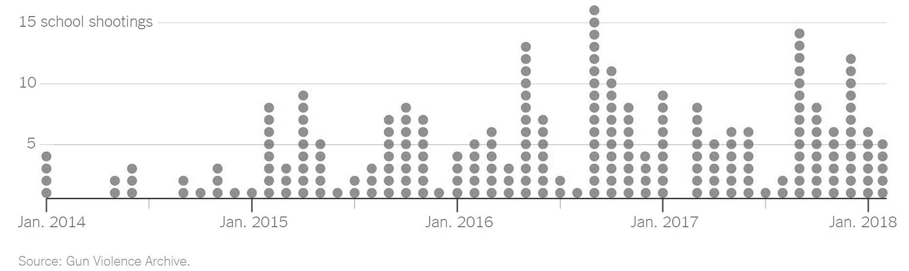

Guns in Schools
Violent school shootings have been the subject of headlines in recent years. In 2012 twenty children and six adults were killed during the devastating Sandy Hook Elementary School shooting, which prompted a national conversation around gun violence. The New York Times reported 138 school shooting deaths from the time of Sandy Hook until 2018, and EdWeek maintains a school shooting tracker that provides up-to-date information on recent episodes of violence.
Source: New York Times, 15 February 2018
Although gun violence is the second leading cause of child and teen death according to Everytown, a gun safety organization, the nation remains divided on the policies needed to curb gun violence in schools and in society.
In 2017 the Pew Center found that the majority of surveyed Americans view the ease of legal access to guns as a factor that contributes "A great deal" or "A fair amount" to gun violence.
Americans in the Northeast Are Most Likely to See Ease of Legal Access to Guns as a Contributor to gun Violence
Source: The 2017 Pew Research Center's American Trends Panel, Wave 26 (April 4-April 18, 2017. The opinions expressed herein, including any implications for policy, are those of the author and not of Pew Research Center. Graphic adapted from: bl.ocks.org.
In spite of the widespread sentiment that access to guns exacerbates issues of violent crime, gun reform remains a highly contentious issue, with groups like the NRA resisting proposed legislation. Such resistance complicates the task of policymakers and voters wishing to identify viable means of curbing gun violence.
I'm bringing the chart in here--can shift as we see appropriate later
Californian and New Yorker Candidates Tweet about School Safety a Lot; Western Governors Steer Clear
Click on the candidate's name below to see the candidate's recent Tweets regarding college affordability.
Biden | Bloomberg | Booker | Brown | Bullock | Buttigieg | Castro | Clinton | Cuomo | Delaney | Gabbard | Gillibrand | Harris | Hickenlooper | Inslee | Klobuchar | Landrieu | Merkley | Ojeda | O'Rourke | Sanders | Steyer | Swalwell | Warren | Yang
What to do with Ojeda, who has no tweets on the subject? Also need to move CSS to separate file.
Senator Booker has tweeted his support for the March for Our Lives1See his tweet on 3/24/2018, with ID number 977564858815217000. [Close] and called for "action and legislation" on school violence,2See his tweet on 5/18/2018, with ID number 997548918761250000. [Close] but has not offered any specific proposals.
Senator Brown has expressed support for the March for Our Lives.1See his tweet on 3/24/2018, with ID number 977657197088911000. [Close] He has stated that "[g]uns do not belong in schools,"2See his tweet on 8/23/2018, with ID number 1032652741385030000. [Close] an apparent rejection of the idea of arming teachers. He arguably suggested an assault weapons ban in tweeting that "[g]uns that are made to kill the maximum number of people in the shortest period of time belong on the battlefield, not in our schoolyards"3See his tweet on 3/25/2018, with ID number 977999755921018000. [Close] and has introduced legislation to improve school security by funding physical security improvements in buildings and early intervention programs to prevent school violence.
Governor Cuomo has expressed support for the March for Our Lives1See his tweet on 3/23/2018, with ID number 977316216950984000. [Close] and called arming teachers "absurd."2See his tweet on 6/6/2018, with ID number 1004151524027660000. [Close] At the state level, he has argued for a Red Flag Law allowing third parties to petition for potential perpetrators of mass shootings to have their guns taken away temporarily.3See, among many others, his tweet on 6/18/2018, with ID number 1008744396819490000. [Close]
Representative Delaney has been somewhat more specific than other Democrats in his policy proposals regarding school safety. He has expressed support for the March for Our Lives and student walkouts,1See his tweets on 4/20/2018 and 3/24/2018, with ID numbers 987393237517262000 and 977672873405018000, respectively. [Close] called for universal background checks, and indicated that he thinks additional police officers in schools for security purposes would be "a good idea" but that arming teachers would be a mistake.1See his tweet on 6/2/2018, with ID number 1002919562554190000. [Close]
Representative Gabbard has expressed support for the March for Our Lives1See her tweet on 5/26/2018, with ID number 1000374584632270000. [Close] and called for "universal background checks and closing the gunshow/online loophole."2See her tweet on 3/14/2018, with ID number 973997684729241000. [Close]
Senator Gillibrand has expressed her support for student walkouts to protest school violence,1See her tweet on 4/20/2018, with ID number 987437895387578000. [Close] but has not offered many specifics in her many tweets about school safety, though she has come out decisively against arming teachers.2See her tweet on 8/23/2018, with ID number 1032625141598040000. [Close]
Senator Harris has expressed support for school walkouts and the March for Our Lives.1See her tweets on 4/20/2018 and 3/24/2018, with ID numbers 987409066594062000 and 977630424297099000, respectively. [Close] She opposes arming teachers2See her tweet on 1/7/2019, with ID number 1082425402948230000. [Close] and has instead proposed instituting universal background checks and banning assault weapons, high capacity magazines, and bump stocks.3See her tweet on 8/23/2018, with ID number 1032709564502820000. [Close]
Governor Inslee has expressed support for student walkouts1See his tweet on 3/15/2018, with ID number 974083630795403000. [Close] and "common sense measures to reduce gun violence."2See his tweet on 2/23/2018, with ID number 966874884734373000. [Close] He has not offered more specific policy objectives, though he has called the idea of arming teachers "wildly contrary to the task of building the community we seek."3See his tweet on 10/28/2018, with ID number 1056585620414310000. [Close]
Senator Merkley has tweeted his support for student walkouts calling for action on school violence,1See his tweet on 4/20/2018, with ID number 987407257020268000. [Close] and for the March for Our Lives,2See his tweet on 3/26/2018, with ID number 978335603329773000. [Close] but has not offered specific policy proposals.
Ojeda has not tweeted on the issue of school safety. During an interview with a local news outlet, he expressed opposition to new gun control laws. This aligns with his positioning himself as a populist, non-traditional brand of Democrat.
Senator Sanders has expressed support for the Parkland students pushing for new gun laws.1See his tweet on 8/14/2018, with ID number 1029476117533650000. [Close] He has not proposed specific policy solutions, though he has called for "commonsense gun safety legislation" and criticized the Trump Administration, and specifically Secretary DeVos, for considering arming teachers.2See his tweet on 8/23/2018, with ID number 1032656840138600000. [Close]
Steyer has not offered specific policy proposals regarding school safety, but has tweeted his support for the Parkland students,1See her tweet on 10/2/2018, with ID number 1047167672280960000. [Close] the March for Our Lives,2See her tweet on 3/24/2018, with ID number 977676222955048000. [Close] and student walkouts.3See her tweet on 3/14/2018, with ID number 974055410876407000. [Close]
Swalwell has been more specific than many Democrats in his policy suggestions regarding school shootings. In addition to expressing support for the March for Our Lives,1See his tweet on 5/3/2018, with ID number 992107733947043000. [Close] he has suggested "truly universal background checks, improving databases, and banning [and] buying back assault weapons."2See his tweet on 12/19/2018, with ID number 1075478626710280000. [Close] He juxtaposed these proposals with the idea of arming teachers, which he suggested would be ineffective and "turn schools into battlegrounds."2See his tweet on 12/19/2018, with ID number 1075478626710280000. [Close]
Senator Warren has tweeted her support for the March for Our Lives and "common-sense gun reform,"1See her tweet on 10/21/2018, with ID number 1054148069611200000. [Close] but has not offered specific policy proposals, though she has expressed strong opposition to the idea of arming teachers.2See her tweet on 10/21/2018, with ID number 1032683496995730000. [Close]
Yang has been more specific than most candidates in his policy suggestions. In addition to expressing support for the Parkland students,1See his tweet on 2/18/2018, with ID number 965272187094667000. [Close] he has suggested raising the age requirement to buy a gun to 21 years old2See his tweet on 9/20/2018, with ID number 1042813196648830000. [Close] and "curbing access to weapons that can kill large numbers of civilians."3See his tweet on 6/20/2018, with ID number 1009507397029760000. [Close] He opposes arming teachers, calling it the "dumbest idea ever" and "embarrassing," suggesting that more resources for mental health outreach in schools would be a more effective solution.4See his tweet on 3/12/2018, with ID number 972991447807987000. [Close]